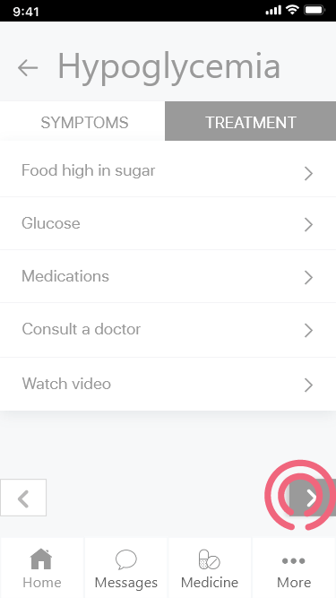
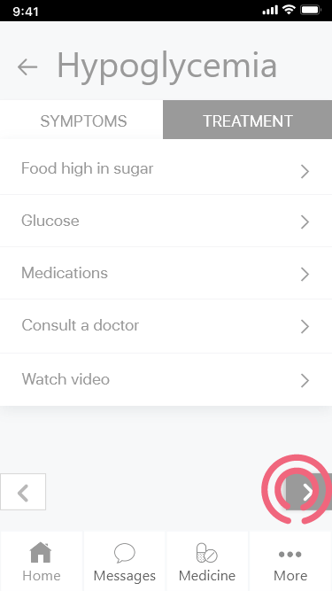

Competitive overview
I reviewed about 15 apps with similar services; none of them offer the exact service that we do. I included only five with the UX report because I used them all for about a week. The initial look suggested that all of them offer better UX and UI than we do with our own app, but the actual use and detailed overview showed that none of them deliver what they promise to users.


 
